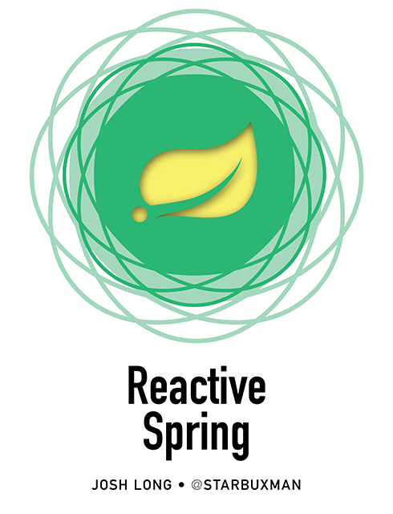
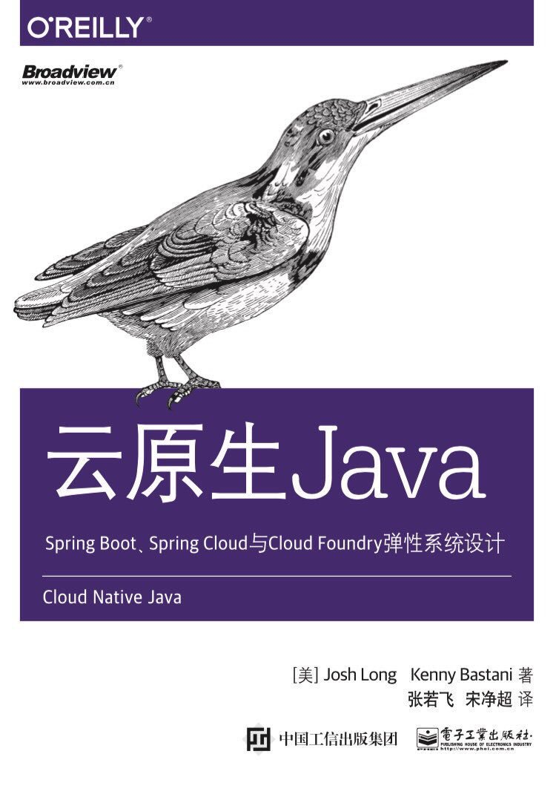
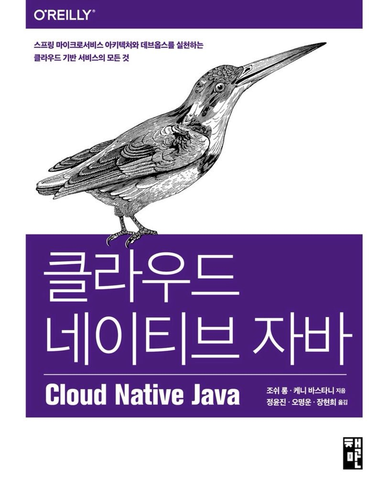

I've authored, or co-authored, six books so far. The latest and greatest of which are Reactive Spring and Cloud Native Java, about which you can find more information on this page.
I'm working on a new book that aims to introduce people to the wide world of reactive Spring.
Follow @ReactiveSpring on Twitter for more
|  |
I wrote this book with my buddy Kenny Bastani. It's all about how to build applications that survive and thrive in the cloud in terms of Spring Boot, Spring Cloud, and cloud technologies like Cloud Foundry. Consider this your one-stop shop for building cloud-native applications. It's available in a number of languages (left to right, top to bottom): English, Chinese, Korean, and Russian.
Follow @CloudNativeJava on Twitter for more
|
 |
|  | |